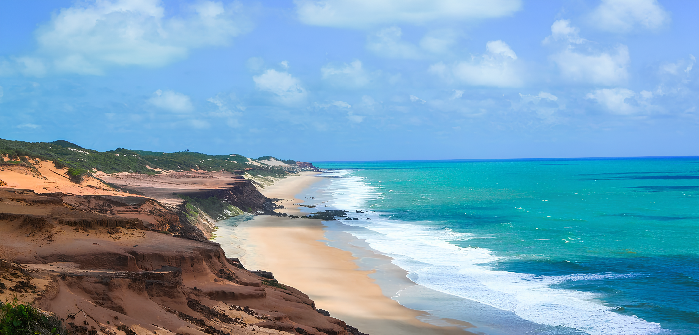

LUGARES E CULTURA

Venha conhecer a nossa majestosa riqueza cultural
Museus, construções históricas, parques, praias, exposições e espaços que ajudam a contar a história de Vitória.
Ver maisVitória tem muito mais para viver do que a gente imagina.
Tem dia que tudo o que a gente precisa é de um lugar gostoso para tomar um café e um pão artesanal. Em outros, bate aquela vontade de se arrumar, chamar as amigas, escolher um restaurante diferente ou descobrir um cantinho da cidade que ainda não entrou na nossa lista.
E Vitória tem dessas surpresas. As ruas são cheias de história, os bares com sabores únicos e com bandas ao vivo, os sabores da nossa culinária e os espaços onde a arte encontra a cultura, a capital capixaba oferece programas para diferentes momentos, mas sem dúvida, você fará memórias inesquecíveis.
O dEStinos nasceu para reunir essas descobertas em um só lugar. Queremos mostrar a cidade, contar histórias de mulheres que empreende, apresentar estabelecimentos que conquistaram seu espaço em muitos corações, publicar eventos culturais e encontrar experiências que merecem ser compartilhadas.
Então, prepare a agenda, salve os endereços e convide alguém para ir com você. E, se preferir explorar tudo no seu próprio ritmo, também tem lugar para isso.
Vitória está cheia de histórias esperando por uma visita. Qual vai ser a nossa próxima parada? Escolha seu próximo destino!
Museus, construções históricas, parques, praias, exposições e espaços que ajudam a contar a história de Vitória.
Ver mais
Restaurantes premiados, bares, cafés, padarias, confeitarias e lugares que transformam uma refeição em um bom programa.
Ver maisEmpreendedoras, artesãs, artistas e mulheres que movimentam a economia e preservam a cultura capixaba.
Ver maisShows, samba, pagode, feiras, oficinas, experiências com vinho, cerâmica e exposições para colocar no calendário.
Ver mais